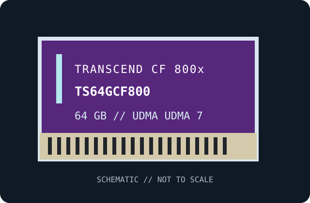

[ REMOVABLE MEDIA // PRODUCT RECORD ]
Transcend CompactFlash 800 64 GB (TS64GCF800)
A model-specific record of the card itself, not a reader or drive. This is a CompactFlash Type I flash card; the listed maximum transfer figures are manufacturer ratings, not a promise of camera throughput.

MEDIA ONLY: Transcend CompactFlash 800 64 GB (TS64GCF800). Capacity, speed series, and compatibility refer to this manufacturer's named SKU; no reader is included.
Capacity, interface and compatibility
| Manufacturer / exact SKU | Transcend TS64GCF800 |
|---|---|
| Nominal capacity | 64 GB (decimal card label; formatted free space is lower). |
| Card / interface | CompactFlash Type I; CF parallel ATA/True IDE family interface. Type I dimensions fit a Type I or Type II CF slot; CF Type II slots are physically deeper. |
| Transfer family / UDMA | CompactFlash 800x series; UDMA UDMA 7 capability. Exact negotiated mode depends on the host controller and firmware. |
| Rated performance / class | up to 120 MB/s read and 60 MB/s write maximum series ratings. No video speed class or VPG sustained-write guarantee is claimed for this SKU here. |
| Camera and host compatibility | For a digital camera or reader with a CompactFlash slot that supports Type I CF media, UDMA UDMA 7 where applicable, and at least 64 GB capacity. Canon EOS 7D Mark II documentation identifies a CF slot with UDMA support; it is an example host, not a claim that Canon tested this exact card. Check the exact host manual's supported capacity, card types, formatting, and firmware before use. A CFexpress-only reader is not compatible. |
| Compatibility limit | Backward negotiation, maximum usable capacity, filesystem, and in-camera formatting vary by host. A faster UDMA card will run at the host's supported rate; verify exact card label and model before purchase or recovery. |
Handling and preservation
Keep the card clean and dry, avoid touching its connector, and do not remove it during access. Format it in the intended host only after backing up any data. For preservation, retain checksummed copies on separate storage and periodically verify readability; flash-card wear, aging, and controller failure are not predicted by the speed rating.
Sources and further reading
- Transcend CF 800 product page and product support — manufacturer specificationsManufacturer product-family information for the labeled series, transfer ratings and format. Confirm the card's exact label and regional revision.
- Transcend — manufacturer product sheet / support documentationManufacturer documentation for the CF series and performance/interface specifications.
- Canon — EOS 7D Mark II manuals and supportHost maker's camera manual/support material for CompactFlash slot and UDMA host compatibility; it does not certify this exact card SKU.
- CompactFlash Association — CompactFlashFormat-family reference; the camera manual governs the host's actual support.
Model-specific speed and capacity are governed by the card marking and Transcend documentation; host compatibility is governed by the host manufacturer.